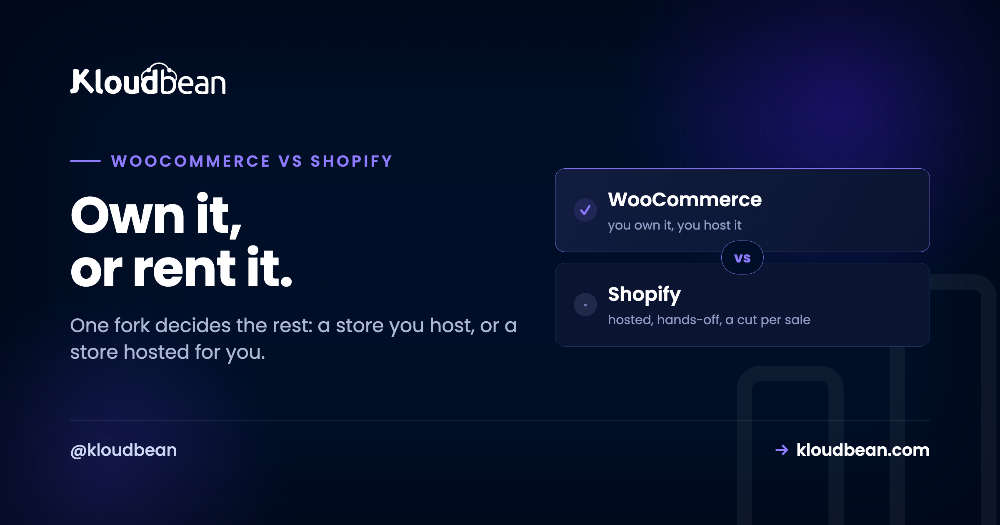

WooCommerce vs Shopify: One Fork Decides the Rest

Most WooCommerce versus Shopify comparisons hand you a table with thirty rows and no verdict, which is exactly backwards. The two platforms differ on one thing that matters, and almost everything else follows from it: Shopify is a closed service that hosts your store for you, and WooCommerce is an open plugin you install on hosting you control. Decide how you feel about that single fork and the rest of the decision mostly makes itself. This guide is about making that fork legible, then telling you plainly which side you are on.
Pick Shopify if you never want to think about servers, updates, or security, and you are happy to trade a slice of every sale for that. Pick WooCommerce if you want to own your store outright, avoid a per-sale platform cut, and keep full control of the code and data, accepting that you are now responsible for the hosting under it. Shopify is a hosted service with a subscription plus payment fees. WooCommerce is a free, open-source WordPress plugin where your only unavoidable cost is hosting and your payment processor's standard rate. The costs cross as you grow: Shopify is cheaper to start, WooCommerce is usually cheaper at scale.
The one difference everything else comes from
Hold this in your head and the rest of the article is just consequences.
| Shopify | WooCommerce | |
|---|---|---|
| What it is | A hosted service (SaaS) | A free plugin for WordPress |
| Who runs the servers | Shopify does. You get no server access | You do, on hosting you choose |
| Who owns the store | It lives on Shopify's platform | You own the files and the database |
| What you pay for the platform | A monthly subscription, plus fees per sale | Nothing to WooCommerce itself |
| What you pay to run it | Included in the subscription | Hosting, and any paid extensions |
| Updates and security | Shopify handles it, invisibly | Handled by you or your managed host |
Everything people argue about, cost, lock-in, flexibility, who fixes it when it breaks, is a downstream effect of that first row. So the rest of this guide walks the consequences that actually change the decision, and skips the feature-checkbox theatre.
Cost: the curves cross, so "cheaper" depends on your size
The most common question is which is cheaper, and the honest answer is that they are cheaper at different sizes, because the two pricing models have different shapes.
Shopify's cost rises with your sales. You pay a monthly subscription, and on top of that Shopify takes a credit-card processing fee on every order. There is a second fee that catches people out: if you use any payment processor other than Shopify Payments, Shopify adds a surcharge on top, published as roughly 0.2% to 2% of the order depending on your plan. Read that twice, because it is unusual. It is effectively a fee for not using their processor. So Shopify's real cost is subscription plus a slice of revenue, and the slice grows as you do.
WooCommerce's cost is mostly fixed. The plugin is free and takes nothing per sale. You pay your payment processor's ordinary rate, which you would pay anywhere, plus hosting, plus any premium extensions you choose. Crucially, your hosting bill does not care whether you did 100 orders this month or 100,000. There is no platform cut.
So the crossover is real and it is personal. A store doing a handful of orders a month is almost always cheaper on Shopify, because a small hosting bill you pay regardless outweighs a tiny percentage of tiny revenue. A store doing serious volume is usually cheaper on WooCommerce, because a percentage of a large number beats a fixed hosting bill. Where exactly the lines cross depends on your average order value and margin, so anyone quoting you a universal figure has not asked about your store. Model your own numbers before you trust a blog's.
One caveat that keeps the comparison honest: WooCommerce's flat cost assumes your hosting can actually handle the store. Cheap shared hosting that buckles during a sale is a false economy, which is the whole subject of WooCommerce hosting.
Ownership and lock-in, which the fee argument usually buries
Cost gets the headlines. Ownership is the thing you feel years later, and it is where the two genuinely diverge.
On Shopify, your store lives on Shopify. You do not get the server, you do not get direct database access, and your theme is written in their templating language. That is fine right up until you want to leave, at which point moving your catalogue, customers, order history, and URLs off the platform is a genuine migration project, not an export button. You are also exposed to their decisions: a pricing change, a policy change, or an app you depend on being pulled is not something you can opt out of.
On WooCommerce, you own the store the way you own any file on your computer. The database is yours, the uploads are yours, the code is yours to read and change. Switching hosting providers is a copy operation you can do in an afternoon, and migrating without downtime is a solved problem. Nobody can change your terms, because there is no platform above you setting them.
This is not an abstract principle. It shows up as a real search: shopify to woocommerce is a query people type precisely because they hit the ceiling of a closed platform and wanted their store back. Very few people search the reverse for ownership reasons.
Shopify's genuine advantage, stated plainly
A comparison on our own blog should be fair, so here is the real reason to choose Shopify, without hedging.
Shopify removes operations entirely. There is no server to size, no software to update, no security patch to apply, no backup to configure, no 2am page saying the site is down. Shopify's team does all of it and you never see it. For a founder whose scarce resource is attention, and who would rather spend every hour on product and marketing than on infrastructure, that is worth real money, and quite possibly worth the percentage they take. If reading the phrase "you are now responsible for the hosting" made your stomach drop, that is useful information: it means Shopify is probably the right call for you, and there is no shame in that.
WooCommerce's answer to this is not "operations are easy". It is "you can delegate operations without giving up ownership", which is what managed hosting is. But that is a different bargain from Shopify's, and you should choose it with eyes open.
Flexibility and who owns the roadmap
The other place the fork bites is how far you can bend the store to your will.
Shopify is deliberately constrained. You work within its structure, and for most stores that structure is well designed and more than enough. When you need something it does not do, you reach for an app from its marketplace, which usually carries its own monthly fee, so a mature Shopify store often runs a stack of paid apps that quietly add up. When you need something no app provides, you are frequently stuck, because you cannot reach the underlying code.
WooCommerce is the opposite: because it is WordPress underneath, you can change anything. Any checkout flow, any custom field, any integration, any content structure. That freedom has a cost, which is that you can also break things, and complexity is yours to manage. It suits a store with unusual requirements, a content-heavy brand that wants commerce and publishing in one place, or anyone who has been told "the platform doesn't support that" one too many times.
| If you value... | Lean |
|---|---|
| Never touching a server | Shopify |
| Fastest possible launch with zero setup | Shopify |
| No per-sale platform cut | WooCommerce |
| Owning your data and code outright | WooCommerce |
| Deep customisation and unusual requirements | WooCommerce |
| Content and commerce in one place | WooCommerce |
| Predictable costs as you scale | WooCommerce |
| Predictable costs while tiny | Shopify |
So, which one?
Two honest recommendations, because there genuinely is no single winner.
Choose Shopify if you are starting out, want to be selling this week, have no interest in the machinery, and your volume is low enough that the percentage does not sting yet. It is the right tool for getting a real store live with the least possible friction, and plenty of large brands stay on it happily forever.
Choose WooCommerce if you want to own the asset you are building, you dislike the idea of a platform taking a slice of every sale, you have or expect the volume where that slice matters, or you know you will need to customise beyond what a hosted platform allows. The catch is the one this whole article keeps returning to: you are now responsible for the hosting, and a WooCommerce store on bad hosting is worse than a Shopify store on good infrastructure. So if you pick WooCommerce, pick the hosting as carefully as you picked the platform.
WooCommerce vs Shopify, once it leaves your laptop
Straight up: if you choose Shopify, none of this applies, because nobody hosts Shopify except Shopify. This section is only relevant if you land on WooCommerce, and we would rather say that than pretend otherwise.
If you do choose WooCommerce, the hosting under it is not a detail, it is the thing that decides whether the store is fast, stays up during a sale, and survives a bad plugin update. WooCommerce is heavier than a blog and much of a store's traffic cannot be cached, so it leans on the server in ways a brochure site never does. That is exactly the gap managed hosting fills. On Kloudbean, WooCommerce runs on managed WordPress with the database, Redis object cache, and reverse proxy configured for a store rather than left to you, staging so a risky update is tried somewhere safe first, automatic backups so a bad day is recoverable, and the Cloudflare edge add-on for speed. Seven clouds to run on, free SSL, and free migration assistance if you are coming from somewhere else, including the shopify to woocommerce move.
The honest boundary is the same as ever. Server, stack, TLS, backups and patching sit on the platform's side. Your store, your products, your theme, and your customer relationships stay yours, which is rather the point of choosing WooCommerce in the first place.
After WooCommerce vs Shopify
If you have decided on WooCommerce, WooCommerce hosting covers what good hosting for a store actually requires, and speed up WooCommerce covers keeping it fast. For a store selling in the Gulf, hosting for Saudi ecommerce gets into latency, RTL, and payment-data residency. On keeping card data off your own server, that same guide covers PCI scope. For the database underneath, managed MySQL, and to move an existing store in, migrating hosting with zero downtime. If you are weighing a larger catalogue platform instead, Magento SEO covers where that one is heavier.
Bring the app. Keep the deploy flow.
Standard code moves onto a standard Linux server, so this is a migration rather than a rewrite. Pick from seven clouds, keep push-to-deploy, and get help moving the first workload across.
- ✓ Free migration assistance
- ✓ Free trial
- ✓ Seven cloud providers
- ✓ Flat monthly price
- ✓ Managed databases
- ✓ Git deploy
Plans from $8/mo · Free migration assistance · Free trial
FAQ
Is WooCommerce cheaper than Shopify?
It depends on your sales volume, because the two have different cost shapes. Shopify charges a subscription plus a fee on every sale, so its cost rises as you grow. WooCommerce is a free plugin with a mostly fixed hosting cost and no platform cut, so its cost is flatter. Small stores are usually cheaper on Shopify, larger stores usually cheaper on WooCommerce, and the crossover depends on your order value and margin.
What is the real difference between WooCommerce and Shopify?
Shopify is a hosted service that runs your store for you on its own platform, and WooCommerce is an open-source plugin you install on WordPress hosting you control. Nearly every other difference, cost structure, ownership, flexibility, and who handles updates, follows from that single distinction between a closed hosted service and a self-hosted open platform.
Does Shopify really take a cut of every sale?
Yes. Shopify charges a credit-card processing fee on every order through Shopify Payments, and if you use a different payment processor it adds a further surcharge on top, published as roughly 0.2% to 2% depending on your plan. That second fee is effectively a charge for not using their processor. Percentages and tiers change, so check Shopify's current pricing, but the structure of a per-sale cut is the constant.
Does WooCommerce have transaction fees?
WooCommerce itself charges nothing per sale. You pay your payment processor's standard rate, which you would pay on any platform, plus your hosting and any premium extensions you choose. There is no platform taking a percentage on top, which is the main reason WooCommerce tends to win on cost at higher volumes.
Is Shopify or WooCommerce better for a small business?
For a brand-new small store with low volume and no technical appetite, Shopify is usually the better start: you are selling within a day and you never touch a server. WooCommerce becomes more attractive as you grow, want to avoid the per-sale cut, or need customisation a hosted platform will not allow. Many small businesses start on Shopify and move to WooCommerce when the fees and the constraints start to bite.
Can I move my store from Shopify to WooCommerce?
Yes, and it is a common move, which is why "shopify to woocommerce" is a frequent search. It is a real migration rather than a one-click export, since you are moving products, customers, orders, and URLs off a closed platform onto one you own. Tools and importers exist to help, and a managed host that offers migration assistance can do the heavy lifting.
Do I need to manage a server if I use WooCommerce?
Someone does, but it does not have to be you. That is the difference between unmanaged and managed hosting. On managed WooCommerce hosting the provider handles the server, the stack, updates, security, and backups, so you get WooCommerce's ownership and flexibility without personally administering a Linux box. What you keep is control of the store itself.
Is WooCommerce harder to use than Shopify?
Setting up is more involved, because you choose and configure hosting, WordPress, and the plugin rather than signing up for one account. Day-to-day management of products and orders is comparable once it is running. The genuine ongoing difference is responsibility for the platform underneath, which managed hosting largely removes while leaving you in control of the store.
Which is better for SEO, WooCommerce or Shopify?
Both can rank well, and the platform is rarely the deciding factor. WooCommerce gives you deeper control over URLs, technical SEO, and content because it is WordPress, which content-led brands value. Shopify handles the basics competently within its structure. As with most stores, site speed and the quality of your content and product pages matter far more than the platform badge.